Basado en Kılıç, Mutlu & Altun · Applied Sciences, 2022
Cómo se separan partículas de un gas con electricidad, cómo lo modelaron los autores y qué aprendieron variando el diseño.
Simulación tridimensional + un modelo analítico más sencillo.
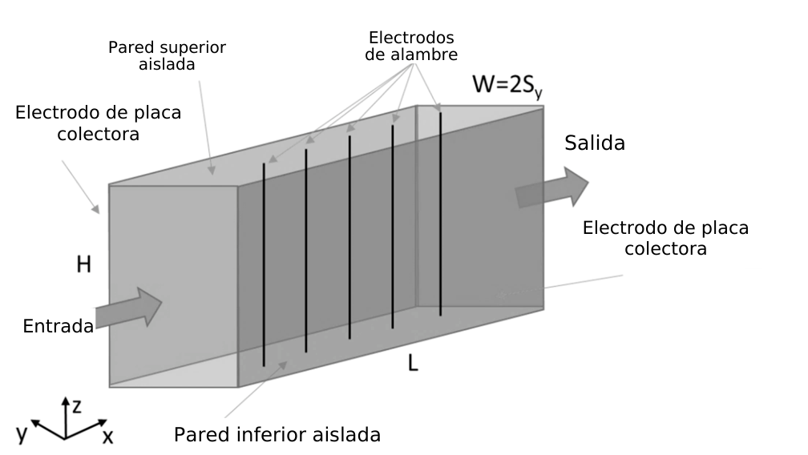
Cerca de los alambres, la descarga de corona ioniza el gas. Los iones se adhieren a las partículas y las cargan.
Las partículas cargadas reciben una fuerza eléctrica y se desplazan hacia las placas, donde quedan retenidas.
El polvo acumulado se retira para que el equipo siga operando.
El gas arrastra la partícula a lo largo del canal; la fuerza eléctrica la empuja hacia un costado. Gana la captura si llega a la placa antes de salir.
Animación cualitativa para ilustrar tendencias; no reproduce los valores del artículo.
Representar a la vez el movimiento del aire, la distribución del campo eléctrico y la trayectoria y carga de las partículas.
Y proponer una expresión analítica para estimar la eficiencia sin repetir toda la simulación detallada.
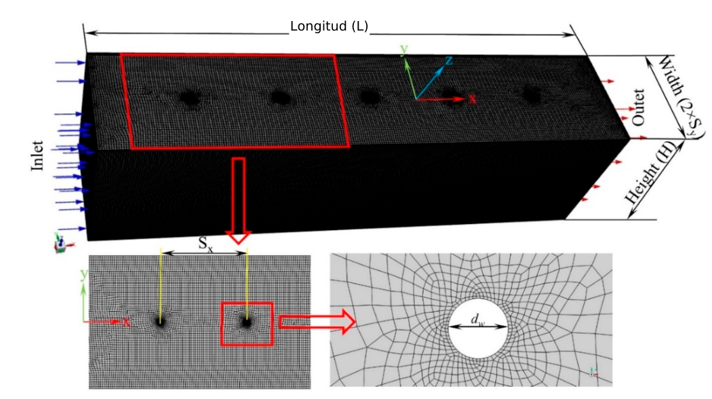
El interior se divide en pequeñas celdas donde se calculan las magnitudes físicas. Es más fina cerca de los alambres, donde el campo y la densidad de corriente cambian rápido.
Escala logarítmica · independencia de malla comprobada
Estado estacionario, modelo RNG k-ε.
La velocidad del gas junto a la pared se toma como cero.
Alambre al potencial de operación; placas a 0 V (tierra).
La densidad de carga iónica se supone uniforme.
Cada partícula se sigue con el modelo de fase discreta de Fluent, sumando arrastre, gravedad y fuerza eléctrica.
Estas hipótesis delimitan la lectura: describen el modelo y las condiciones analizadas, no todas las configuraciones posibles de un equipo real.
El flujo de masa se conserva: no se crea ni se pierde gas al atravesar el canal.
El campo depende de cómo cambia el potencial en el espacio: potencial y campo no son lo mismo.
Conecta el potencial con la carga espacial de los iones y de las partículas.
El efecto eléctrico directo: carga de la partícula por campo eléctrico.
El argumento de una exponencial debe ser adimensional. Revisamos las unidades paso a paso.
Pulse → para avanzar cada paso.
Valores ilustrativos para explorar la ecuación (24); no son datos del artículo.
Una simulación no se acepta solo porque produzca gráficas detalladas.
Apoya usar el modelo para explorar tendencias. No significa que cada configuración posterior se haya construido y medido.
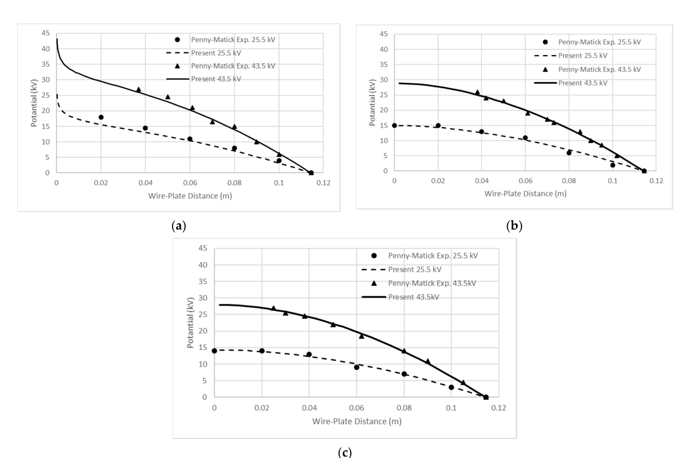
Los valores más intensos aparecen cerca de los alambres y disminuyen hacia las placas a tierra. Ahí, las partículas encuentran condiciones de carga más intensas.
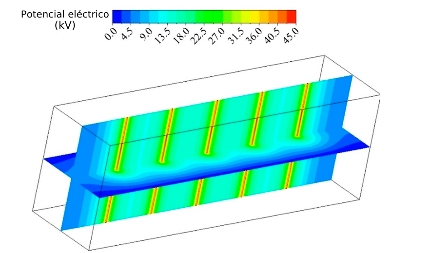
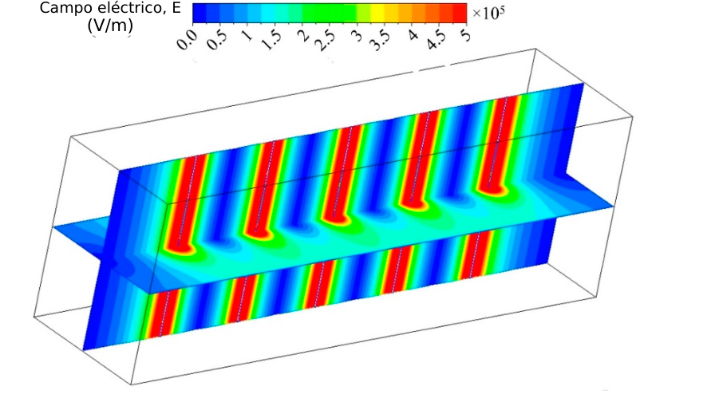
El color es tiempo de residencia, no eficiencia de captura.
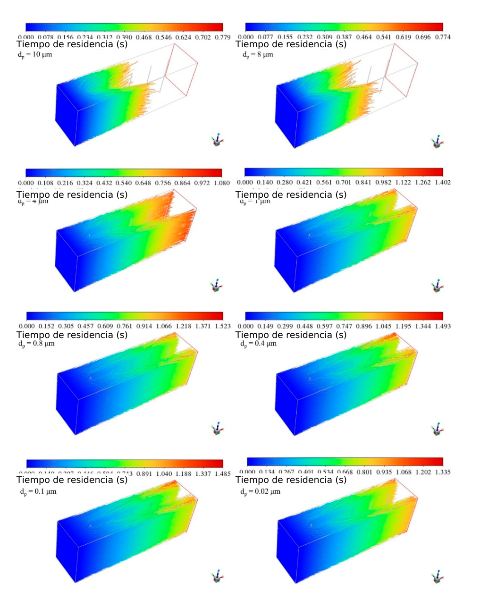
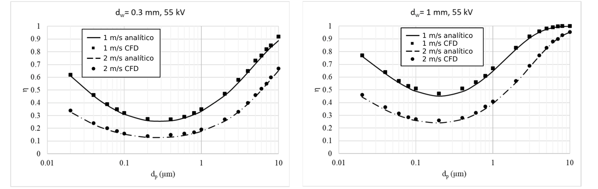
La eficiencia baja, llega a un mínimo y vuelve a subir. Alrededor de 0.1–0.2 µm se captura la menor proporción: es lo que más escapa.
En partículas grandes pesa la carga por campo; en las muy pequeñas, la difusión de iones. Entre ambas quedan las difíciles.
diferencia entre el modelo analítico y el CFD 3D en los casos comparados, dentro de su rango de aplicación.
Generalmente aumenta la eficiencia.
Más tiempo disponible para la captura.
De 115 a 90 mm mejora la recolección.
También mejora η en los casos analizados.
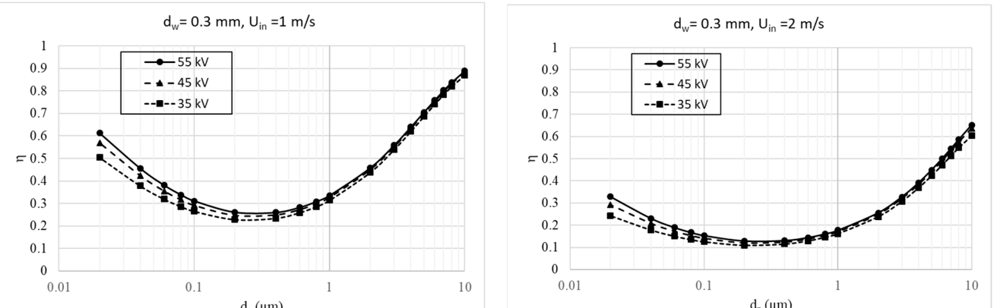
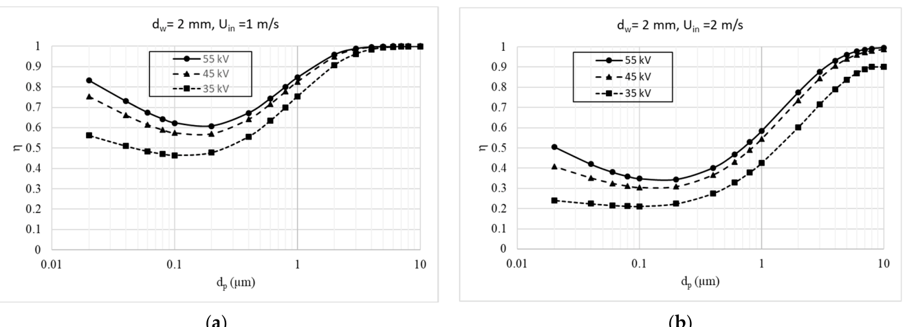
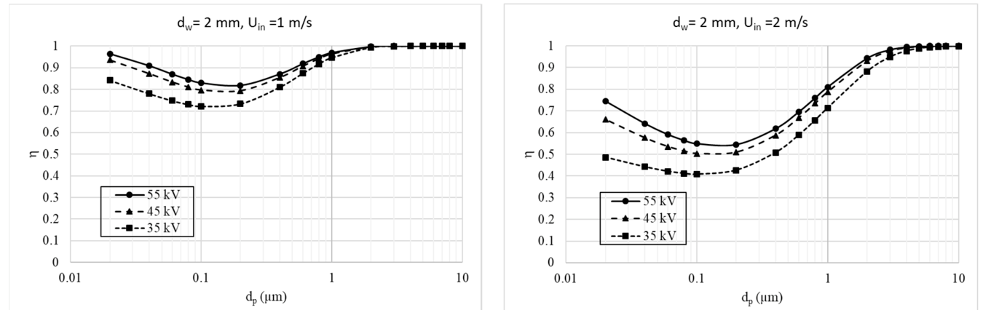
potencia de un alambre de 1 mm vs. 0.3 mm, a igual voltaje
potencia de un alambre de 2 mm vs. 0.3 mm, a igual voltaje
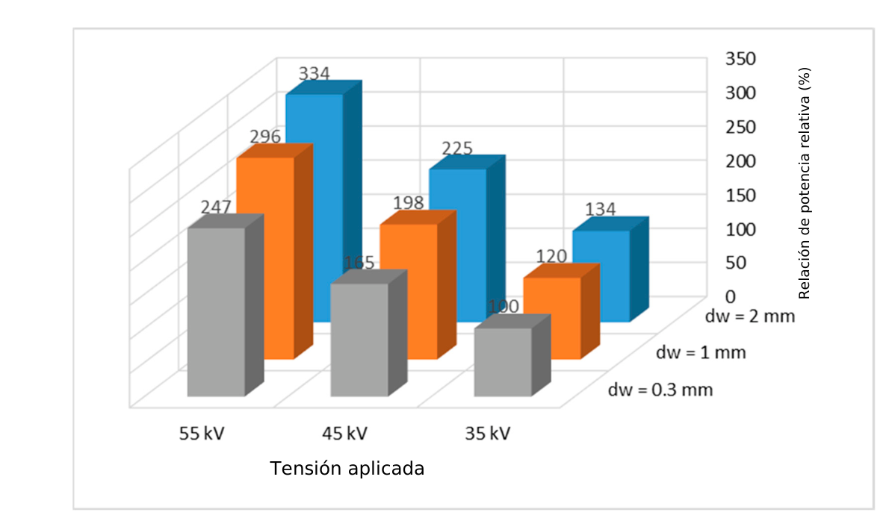
No basta con maximizar la captura: también hay que considerar la energía necesaria.
Entre 0.1 y 0.2 µm aparece el intervalo de máxima penetración.
La opción que retiene más partículas no es necesariamente la más conveniente si requiere más energía.
Comparar combinaciones de voltaje, geometría y velocidad del gas antes de modificar o fabricar un equipo.
CFD 3D muestra el detalle; el modelo analítico da estimaciones rápidas para orientar qué opciones estudiar a fondo.
No reemplaza la comprobación en el equipo real, pero apoya decisiones de diseño con más información.
Fuente: Kılıç, M.; Mutlu, M.; Altun, A. F. “Numerical Simulation and Analytical Evaluation of the Efficiency of Particle Collection in a Gas by Wire-Plate Electrostatic Precipitators”. Applied Sciences, 2022, 12, 6401. DOI: 10.3390/app12136401